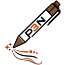

p3nAPI key
Without a key, p3n gives you 10 calls an hour, up to 5,000 characters each. For more, sign up (you get free credit), create a key on the API keys page and paste it here.
Saved as soon as p3n accepts it.
Appearance
System follows your browser. The same three are at the foot of the p3n panel.
What p3n sends
Only the text you select and send, and only when you choose Check or Rewrite. It goes to api.p3n.si and nowhere else. The extension doesn't read pages on its own, keeps no history and has no analytics. Your key is stored in this browser only.